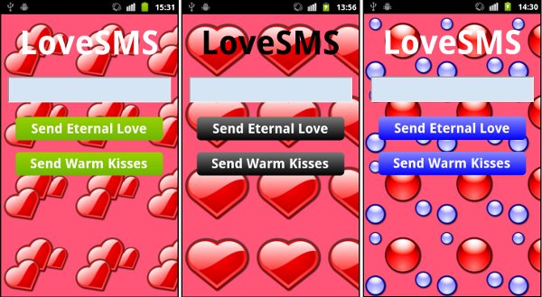

WebViewLoveSMS is an HTML5 application in the collection of example programs that comes with MoSync. The program shows you how to write an application using HTML/CSS/JavaScript, and how to send messages from JavaScript to C++ to send text messages.
Here is a video introducing the app:
You will find the latest version of the source code of the app at the MoSync GitHub repository.
A fun way of learning how to author HTML5 applications is to modify and customise LoveSMS in various ways. You could even make your own version of the app and publish it in the app stores.
Here are some suggestions.
It is easy to change the background image of the app. This has a big visual impact on the look of the user interface.
The following screenshots show some variations I made to LoveSMS by altering the CSS definitions:

For the backgrounds, I used 128x128 pixel icons from the Nuvola icon
set by David Vignoni. This is a
great set of icons licensed under the LGPL. You could of course also
use your own photographs as background image to personalize the app.
To alter the background image, first drop the new graphics file into the LocalFiles folder. Next modify the CSS. You will find the CSS that defines the background image in file LocalFiles/PageMain.html, in the style definition for the html element. If you wish to use the icon "katomic.png", for example, update this line of code:
background-image:url('amor128x128.png');
to be:
background-image:url('katomic.png');
Another thing that has a big impact on the appearance of the user interface is the color of interaction elements. In in the style sheet definitions in file LocalFiles/PageMain.html, you can change the color of buttons and other user interface elements to customize the app.
A few words about gradients. There is a flaw in the CSS for the version of the demo app shipped with MoSync 2.7 (this will have been fixed in subsequent releases).
This line:
background-color: -webkit-gradient(linear, 0% 0%, 0% 100%, from(#99CF00), to(#6DB700));
should be:
background-image: -webkit-gradient(linear, 0% 0%, 0% 100%, from(#99CF00), to(#6DB700));
or alternatively:
background-image: -webkit-gradient(linear, left top, left bottom, from(#99CF00), to(#6DB700));
Thus, use property "background-image" rather than "background-color" to make gradients work in the WebKit browsers used in the WebView widgets on iOS and Android.
It could also be worth to include gradient definitions for Mozilla if you wish to test your app in Firefox on a laptop or desktop machine during development. However, you are better off using Chrome or Safari for testing, which are based on WebKit. More on that below.
The leftmost screenshot shows the original look of the app. The following is the updated CSS for the ".button" class used for that version:
.button
{
/* Width of buttons. */
width: 11em;
/* Centers buttons horizontally. */
display: table;
margin: 0.9em auto;
/* Padding and radius. */
padding: 0.3em 0.5em;
border-radius: 0.3em;
-moz-border-radius: 0.3em;
-webkit-border-radius: 0.3em;
/* Text properties. */
font-size: 1.5em;
font-weight: bold;
text-align: center;
color: white;
/* If gradients are not supported, use solid background color. */
background-color: #99CF00;
/* Background gradients. */
background-image: -webkit-gradient(linear, left top, left bottom, from(#99CF00), to(#6DB700));
background-image: -moz-linear-gradient(#99CF00, #6DB700);
/* This is only useful on systems having a cursor. */
cursor: pointer;
}
This is the gradient used for the example in the middle screenshot:
background-image: -webkit-gradient(linear, left top, left bottom, from(#777777), to(#000000)); background-image: -moz-linear-gradient(#777777, #000000);
And this is the gradient used for the example in the rightmost screenshot:
background-image: -webkit-gradient(linear, left top, left bottom, from(#8888FF), to(#0000FF)); background-image: -moz-linear-gradient(#8888FF, #0000FF);
To alter the color of the heading "LoveSMS", you change this line in the #HeadingElement style:
color: white;
to for instance:
color: black;
Note that the ".button:active" style included in the CSS is currently not useful on iOS or Android, since they are touch based and have no pointer cursor. It was included to make testing in a regular web browser more pleasant.
Actually, to test your HTML5 app in a browser on a laptop or desktop machine can be very convenient during development, especially when tweaking the user interface. The main reason it is convenient is the very rapid edit/test cycle. Just open the html-file in a web browser, edit the code, press F5 in the browser to refresh to see the results. Turn around time is seconds, much faster compared to build, deploy and test on a device.
That said, do not forget to test on devices early and often. Browsers on devices and browsers on desktop OS:es behave differently, have that in mind. The WebView widgets on iOS and Android are based on WebKit, an open source browser engine. To test for those platforms, best is to use a browser based on WekKit, such as Chrome or Safari.
When testing your app in desktop OS web browser, it is a good idea to comment out the code that send messages to C++. The JavaScript code that handles this can cause some browsers to raise errors. Look for calls in the code to the function bridge.messagehandler.send(). Just don't forget to uncomment before testing on a device. ;-)
If you are doing much development using a desktop browser, you could build conditional logic for turning on and off message sending. Moveover, you could build a mock framework, that emulates calls to C++ and gives back mock results.
The actual smileys that make up the text messages that are sent are created in the JavaScript code in PageMain.html. Locate the function CreateMessageStrings(), there you will find the smiley strings. You can change the messages to be whatever you wish.
You could for example add several new buttons, and use them to quickly send commonly used text messages. For example:
Imagination is the only limit ;-)
Have fun!